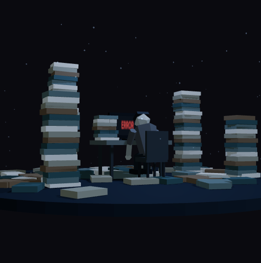

00 / HERO
00AДно

КАДР ИЗ РАБОТАЮЩЕЙ 3D-СЦЕНЫ0%
Для вашей настройки уменьшенного движения доступны статичные кадры и ползунок.
Замысел
Камера и композиция
Окружение
Ученик
Тренер
Свет и атмосфера
Переход
Четыре кадра показывают развитие одной главы. На лендинге движение управляется прокруткой. Пример воспроизведения здесь занимает 7 секунд. Тарифы отображаются в рублях.